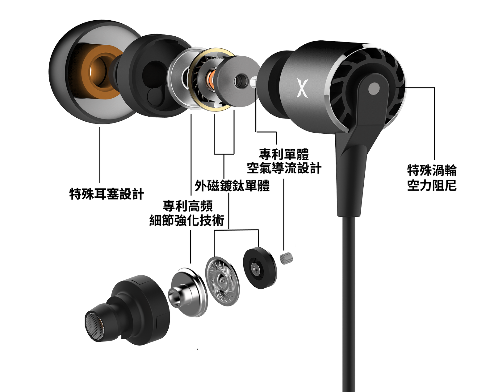
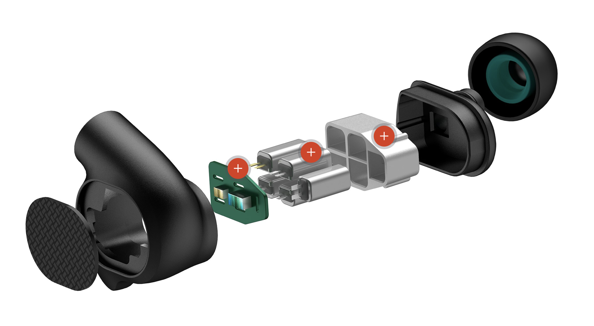
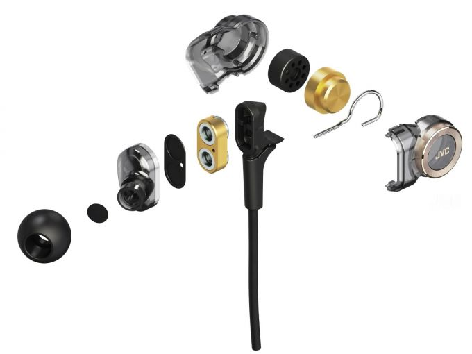

耳機是什麼?
|
耳機是什麼?
基本上，耳機是個小型的音響，他接受來自媒體播放器或接收器所發出的電訊號，利用貼近耳朵的揚聲器將其轉化成可以聽到的音波，這就是最為人所知的耳機的功能。
雖然耳機都可以發出聲音，但是因不同人所設計的揚聲器也就是發聲單元的方式不同而產生了很多種發聲方式，依照他們將能量轉換為聲音的換能原理來分類我們可以將耳機分為:
動圈式
動鐵式
壓電式
氣動式
靜電式 幾種，
其中以動圈式，動鐵式兩種耳機最常出現在我們的生活中，接下來就讓我來簡單介紹一下他們吧。
動圈式單體:

動圈式單體是最常見的單體種類，被廣泛運用在耳機和音響，動圈式單體的原理很簡單，就是以單體通電後產生的磁場，和耳機內本身存在的永磁場發生交互作用，進而驅使振膜的震動，就可以發出聲音，動圈的聲音一般較為自然，中高低頻之間的銜接良好。
動鐵式/平衡電樞（Balanced armature）：

動鐵式單體原先用於醫療助聽器使用，後來因為動鐵低失真、靈敏度高的聲音特性，才漸漸被發掘在消費型耳機市場的潛力。
顧名思義，動鐵的工作原理是以通電後的磁場帶動銜鐵，銜鐵再推動振膜發出聲音。動鐵單元的缺點是音域較窄，通常會用動鐵單體體積小的特性，在一副耳機中放入多枚單體，透過這樣的方式彌補響頻範圍較小的缺點，但在單體之間的調音難度就更高，有些調音不佳的動鐵耳機便會造成不自然的聽感。
多單體耳機:

而現在的耳機裡面時常也擁有不只一顆的單體，綜觀多單體耳機的歷史，分成雙振膜、雙動圈、三動圈、多單體平衡電樞，甚至近年大熱的圈鐵混合結構，技術類型多采多姿，彼此優劣暫且不提，從音樂欣賞的角度看待，耳機所使用的技術並非唯一重點，重點在於能否運用熟悉的技術，完完全全展現聲音理念及品牌特色。
受到單一技術限制，可能造成調音的困難點；舉例來說，平衡電樞較動圈單體的缺點是頻寬窄，不得不採用多單體配置，分別負責不同頻段，配合妥善設計的分音器，令頻段銜接流暢。
此外，耳機單體未必愈多愈好，多單體間的頻段銜接考驗設計師的水準，倘若設計不合宜，容易造成聲音缺陷，容易聽見頻段的銜接問題，使得產品完成度不足，難以為消費者所接受。
所以說了這麼多，我到底該選什麼耳機好呢?別急，先記得動圈耳機的聲音一般較為自然，中高低頻之間的銜接良好，以及動鐵低失真、靈敏度高的特性，這就是你跨出選耳機的第一步了。
接下來就請到下一個章節看"耳機的類型"吧~
|